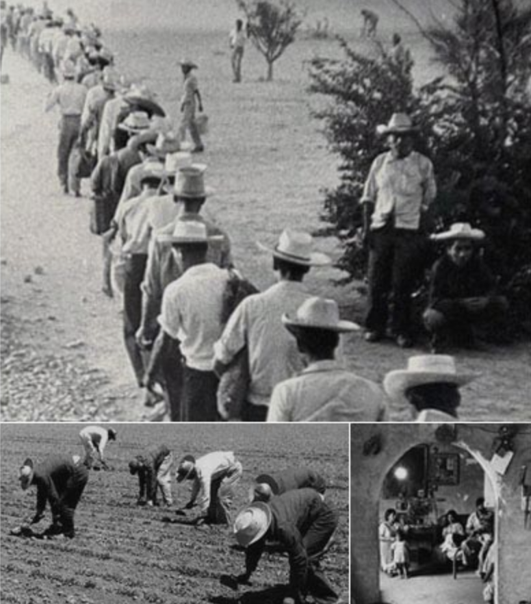

The Bracero History Archive collects and makes available the oral histories and artifacts pertaining to the Bracero program, a guest worker initiative that spanned the years 1942-1964. Millions of Mexican agricultural workers crossed the border under the program to work in more than half of the states in America.
